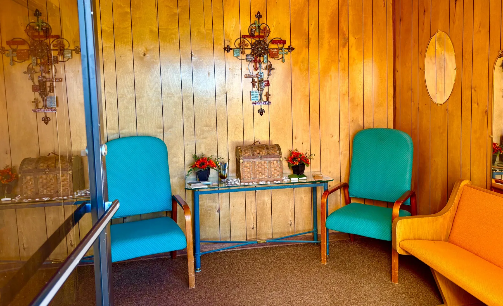
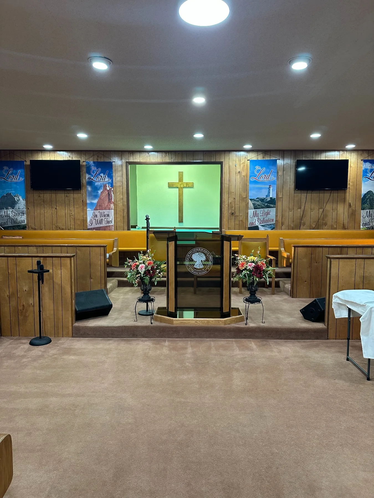

Explore the Church
See photos of the exterior, welcome area, and sanctuary before your visit.
You are welcome
We look forward to welcoming you to Open Door Church.

Your first visit
See the church building before you arrive and explore our worship space below.
Your first Sunday
A simple guide to getting acquainted with Open Door Church.
See photos of the exterior, welcome area, and sanctuary before your visit.
Service times are being confirmed. Directions to 402 W Oklahoma St, Pampa, TX 79065 are available below.
Join us as we gather around worship, fellowship, and the Word of God.
Join us in worship
We look forward to worshiping with you. Times will be posted once confirmed.
Time to be announced
Time to be announced
402 W Oklahoma St, Pampa, TX 79065
Plan Your VisitConnect with Open Door
Planning a visit? We would love to welcome you.
This form prepares an email in your own email app. You must press Send there to deliver it. The website does not store or transmit the message. Please avoid including sensitive personal or medical information.
Inside the church



Good to know
We want your visit to feel comfortable and straightforward.
Open Door Church is at 402 W Oklahoma St, Pampa, TX 79065. Get directions .
The current service schedule is being confirmed with church leadership.
Take a look at the welcome area and sanctuary photos on this page to become familiar with the space.
Visit our Contact page. Phone and email details will be added after verification.
Our foundation built on Christ
Romans 15:7 · KJV
Welcome one another as Christ has welcomed us.
Psalm 100:4 · KJV
Enter His gates with thanksgiving and praise.
Hebrews 13:2 · KJV
Remember to show hospitality to others.